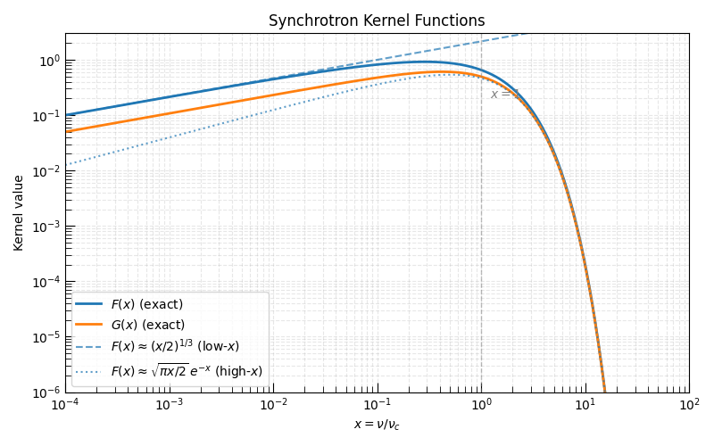
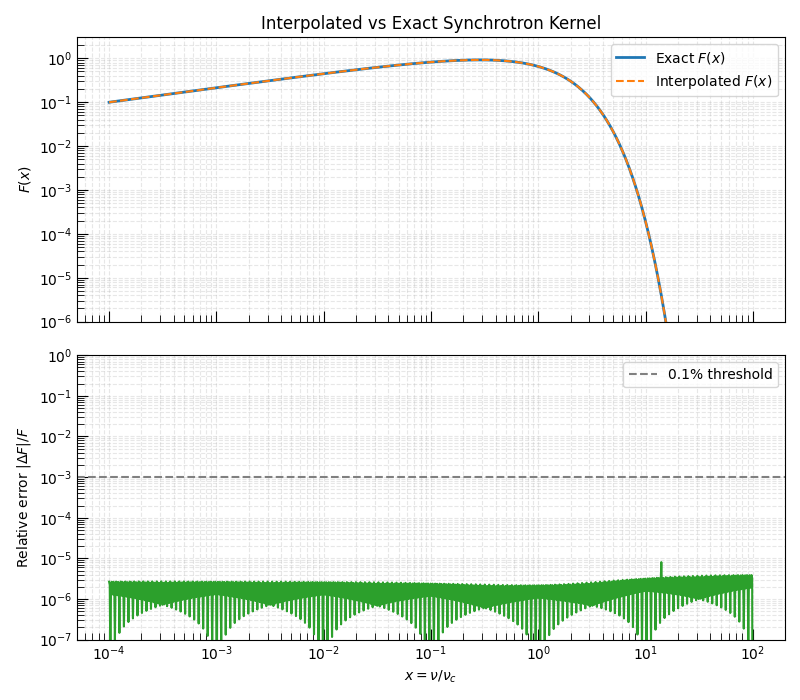

Note
Go to the end to download the full example code.
The Synchrotron Kernel Functions F(x) and G(x)#
The synchrotron emission spectrum of a single relativistic electron is governed by two dimensionless kernel functions, \(F(x)\) and \(G(x)\), where \(x = \nu / \nu_c\) is the ratio of the observing frequency to the electron’s critical synchrotron frequency \(\nu_c \propto \gamma^2 B\).
The first kernel \(F(x)\) enters the total emitted power per unit frequency for an unpolarized electron:
The second kernel \(G(x)\) is related to the polarized component:
Both kernels have known analytic asymptotic limits that are important for understanding synchrotron spectra:
\(F(x) \approx \tfrac{4\pi}{\sqrt{3}\,\Gamma(1/3)} \left(\tfrac{x}{2}\right)^{1/3}\) for \(x \ll 1\) (the optically thin low-frequency tail, \(\propto \nu^{1/3}\))
\(F(x) \approx \sqrt{\tfrac{\pi x}{2}} e^{-x}\) for \(x \gg 1\) (exponential cutoff)
This example demonstrates both the exact and interpolated kernels available in Triceratops and validates that the interpolation is accurate for practical use.
For theoretical background see Synchrotron Radiation Theory.
Relevant API References#
from time import perf_counter
import matplotlib.pyplot as plt
import numpy as np
from triceratops.radiation.synchrotron.core import (
first_synchrotron_kernel,
get_first_kernel_interpolator,
get_second_kernel_interpolator,
second_synchrotron_kernel,
)
from triceratops.utils.plot_utils import set_plot_style
Kernel Setup#
We evaluate the kernels over a wide dynamic range in \(x\), from deep in the low-frequency regime (\(x \ll 1\)) through the exponential cutoff (\(x \gg 1\)).
Note
The exact kernel functions use modified Bessel functions (\(K_{5/3}\) and
\(K_{2/3}\)) from scipy.special and are computed via numerical
integration. This makes them accurate but slow for population-integral loops.
0% | | 🦖 0/1000 [00:00<?, ?it/s]
18% |█▊ | 🦖 184/1000 [00:00<00:00, 1832.81it/s]
45% |████▌ | 🦖 450/1000 [00:00<00:00, 2317.29it/s]
100% |██████████| 🦖 1000/1000 [00:00<00:00, 3737.18it/s]
Asymptotic Limits#
The two asymptotic forms of \(F(x)\) provide physical intuition:
The low-\(x\) limit directly produces the \(\nu^{1/3}\) optically thin synchrotron tail observed below the injection break in radio afterglow spectra.
Plot: F(x) and G(x) with Asymptotic Limits#
Both kernels peak near \(x \approx 0.3\)–\(0.5\) and fall off steeply for \(x \gg 1\). The ratio \(G(x)/F(x)\) characterizes the degree of linear polarization; for an isotropic electron pitch-angle distribution, the net polarization vanishes.
set_plot_style()
fig, ax = plt.subplots(figsize=(8, 5))
ax.loglog(x, F_exact, lw=2.0, label=r"$F(x)$ (exact)")
ax.loglog(x, G_exact, lw=2.0, label=r"$G(x)$ (exact)")
ax.loglog(x, F_low_x, ls="--", color="C0", alpha=0.7, label=r"$F(x) \approx (x/2)^{1/3}$ (low-$x$)")
ax.loglog(x, F_high_x, ls=":", color="C0", alpha=0.7, label=r"$F(x) \approx \sqrt{\pi x/2}\,e^{-x}$ (high-$x$)")
ax.axvline(1.0, color="gray", ls="--", alpha=0.5, lw=1)
ax.text(1.2, 2e-1, r"$x = 1$", color="gray", fontsize=10)
ax.set_xlabel(r"$x = \nu / \nu_c$")
ax.set_ylabel(r"Kernel value")
ax.set_title("Synchrotron Kernel Functions")
ax.set_xlim(1e-4, 1e2)
ax.set_ylim(1e-6, 3)
ax.legend()
ax.grid(True, which="both", ls="--", alpha=0.3)
plt.tight_layout()
plt.show()

Interpolated vs Exact F(x): Accuracy#
For population-level spectra that integrate over the electron distribution,
the kernel is called inside an inner loop over Lorentz factor \(\gamma\).
Triceratops provides interpolated kernels via
get_first_kernel_interpolator() that
pre-tabulate \(F(x)\) on a log-space grid.
Hint
Use the interpolated kernel whenever you call
compute_ME_spectrum_from_dist_function()
repeatedly (e.g. in an MCMC loop). The speedup factor is typically
\(10\)–\(100\times\) with negligible accuracy loss.
t0 = perf_counter()
kernel_interp = get_first_kernel_interpolator(x_min=1e-5, x_max=1e2, num_points=2000)
t_setup = perf_counter() - t0
# Interpolated values on the same x grid (excluding the out-of-range edges)
F_interp = kernel_interp(x)
F_ref = first_synchrotron_kernel(x)
rel_error = np.abs(F_interp - F_ref) / np.where(F_ref > 0, F_ref, F_ref)
# Timing comparison
n_calls = 500
t0 = perf_counter()
first_synchrotron_kernel(x[:n_calls])
t_exact = perf_counter() - t0
t0 = perf_counter()
kernel_interp(x[:n_calls])
t_interp_calls = perf_counter() - t0
speedup = t_exact / t_interp_calls
print(f"Interpolator setup time : {t_setup * 1e3:.1f} ms")
print(f"Exact kernel ({n_calls} calls): {t_exact * 1e3:.1f} ms")
print(f"Interp kernel ({n_calls} calls): {t_interp_calls * 1e3:.1f} ms")
print(f"Speedup factor : {speedup:.1f}×")
0% | | 🦖 0/2000 [00:00<?, ?it/s]
7% |▋ | 🦖 141/2000 [00:00<00:01, 1407.30it/s]
15% |█▍ | 🦖 297/2000 [00:00<00:01, 1494.41it/s]
24% |██▎ | 🦖 473/2000 [00:00<00:00, 1613.30it/s]
34% |███▍ | 🦖 679/2000 [00:00<00:00, 1788.56it/s]
47% |████▋ | 🦖 941/2000 [00:00<00:00, 2086.42it/s]
71% |███████ | 🦖 1416/2000 [00:00<00:00, 2989.25it/s]
100% |██████████| 🦖 2000/2000 [00:00<00:00, 3082.45it/s]
0% | | 🦖 0/1000 [00:00<?, ?it/s]
18% |█▊ | 🦖 184/1000 [00:00<00:00, 1835.67it/s]
45% |████▌ | 🦖 451/1000 [00:00<00:00, 2322.59it/s]
100% |██████████| 🦖 1000/1000 [00:00<00:00, 3747.74it/s]
0% | | 🦖 0/500 [00:00<?, ?it/s]
37% |███▋ | 🦖 186/500 [00:00<00:00, 1851.66it/s]
91% |█████████▏| 🦖 457/500 [00:00<00:00, 2355.07it/s]
100% |██████████| 🦖 500/500 [00:00<00:00, 2367.88it/s]
Interpolator setup time : 649.7 ms
Exact kernel (500 calls): 211.5 ms
Interp kernel (500 calls): 0.2 ms
Speedup factor : 1336.3×
Plot: Interpolation Relative Error#
The relative error of the interpolated kernel should remain well below \(10^{-3}\) across the range used for synchrotron population integrals. Errors grow near the boundaries where the kernel values are extremely small.
fig, axes = plt.subplots(2, 1, figsize=(8, 7), sharex=True)
axes[0].loglog(x, F_ref, lw=2, label="Exact $F(x)$")
axes[0].loglog(x, F_interp, ls="--", lw=1.5, label="Interpolated $F(x)$")
axes[0].set_ylabel(r"$F(x)$")
axes[0].legend()
axes[0].grid(True, which="both", ls="--", alpha=0.3)
axes[0].set_title("Interpolated vs Exact Synchrotron Kernel")
axes[0].set_ylim([1e-6, 3])
axes[1].loglog(x, rel_error, color="C2", lw=1.5)
axes[1].axhline(1e-3, ls="--", color="gray", label="0.1% threshold")
axes[1].set_xlabel(r"$x = \nu / \nu_c$")
axes[1].set_ylabel(r"Relative error $|\Delta F| / F$")
axes[1].legend()
axes[1].grid(True, which="both", ls="--", alpha=0.3)
axes[1].set_ylim([1e-7, 1e0])
plt.tight_layout()
plt.show()

Discussion#
The synchrotron kernels \(F(x)\) and \(G(x)\) are the universal building blocks of all single-electron synchrotron emissivity calculations. Their asymptotic forms — \(F \propto x^{1/3}\) at low \(x\) and \(F \propto \sqrt{x}\,e^{-x}\) at high \(x\) — directly produce the spectral slopes observed in radio-to-X-ray synchrotron sources.
The interpolated kernel available via
get_first_kernel_interpolator()
reproduces the exact values to better than 0.1% over the range
\(x \in [10^{-5}, 10^2]\) while offering a substantial speed advantage
for population integrals. The setup cost (building the interpolation table)
is paid once, after which each evaluation is essentially free.
For population-level spectra, see the companion example sphx_glr_galleries_examples_e_physics_synchro_plot_PL_sed.py.
Total running time of the script: (0 minutes 2.848 seconds)